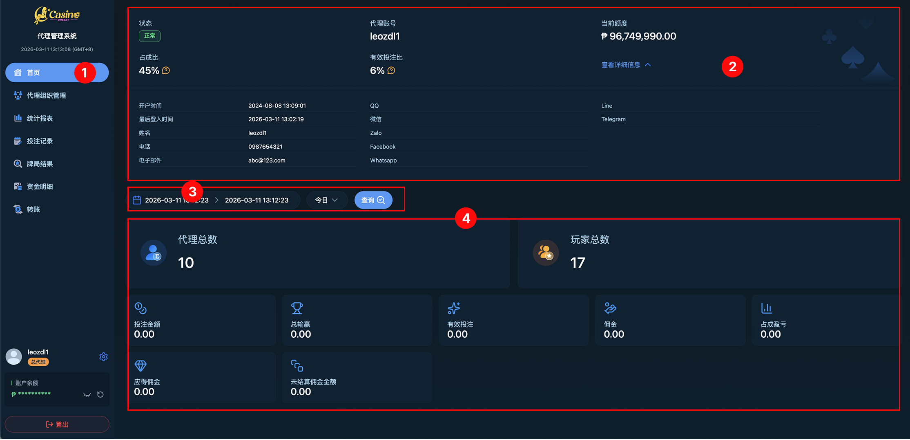

02
基本功能
代理後台首頁佈局概覽與個人化權限設置說明
一、界面佈局核心
下圖展示了代理看板的核心佈局，分為導航控制、帳號資訊與權限監控、以及數據看板三大區域：

| 區塊名稱 | 核心功能與說明 |
|---|---|
| 功能主選單 (左側) | 導航核心：包含首頁、代理組織管理、統計報表、投注記錄、資金細目與轉帳等入口。 |
| 帳號與參數區 (頂部) | 管理中心：顯示當前登錄者資訊、錢包餘額，以及核心運營權限（含當前額度、佔反比、有效投注比）。 |
| 數據儀表板 (中心) | 營運總覽：呈現代理體系整體績效，包含總投注、輸贏、佣金損益等。 |
二、個人化設置中心
1. 個人帳號資訊 (側邊欄/頂部)
顯示當前登錄的身份核心資訊：
- 帳號名稱與等級：顯示如「leozdf1 [總代理]」。
- 帳戶餘額：即時顯示目前可用金額，支持隱藏（點擊小眼睛）與手動刷新。
- 設置入口：點擊齒輪圖標 ⚙️ 進入詳細功能清單。
2. 設置選單功能
包含以下核心操作選項：
- 語言切換：支持 簡中、英文、越南文、菲律賓文、韓文，點擊後即時套用。
- 夜間模式：一鍵切換深色/淺色皮膚，降低長時間操作的視覺疲勞。
- 修改密碼：定期更新登入密碼，維護帳號安全。
- 清除緩存：若遇到數據顯示異常，可清除本地暫存檔案。
- 登出：安全結束當前會話。